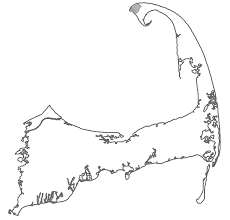

Home Page
Home Page
🐾 Everything Dog 🐾
I have been an avid dog lover my whole life. I have worked in a varity of roles in the K-9 world throughout my life- as a dog walker/sitter, vetrinarian assistant, play date supervisor, and trainer. Whether I am playing with my own dog, training a client's dog, or hanging out with a pack of crazy pups I'm always happiest when I'm engulfed by my 4-legged friends!
🐾 Harley is named in honor of my uncle, Paul, who loved to collect, restore, and ride antique Harley Davidson motorcycles 🐾
🥾 Hiking 🥾
Hiking is one of my favorite activities. I prefer hikes that are steep and have a peak with a beautiful view. My last hike was in New Hampshire at Mount Monadnock, the view was amazing and I hope to do more hikes like that again soon.

🚲 Biking 🚲
Growing up I was a great biker, I use to spend my summer days biking the Cape Cod Rail Trail, a 25.5-mile path that stretched from Welfleet to Dennis MA. It was was tough 50ish miles at the begining of the summer, by the end it was very simple for me to complete. I enjoyed being outside in the beautiful weather and the sense of accomplishment I got when I finally got home at the end of the day. I don't think I could ever bike that distance again, but had a great time as a teenager.
